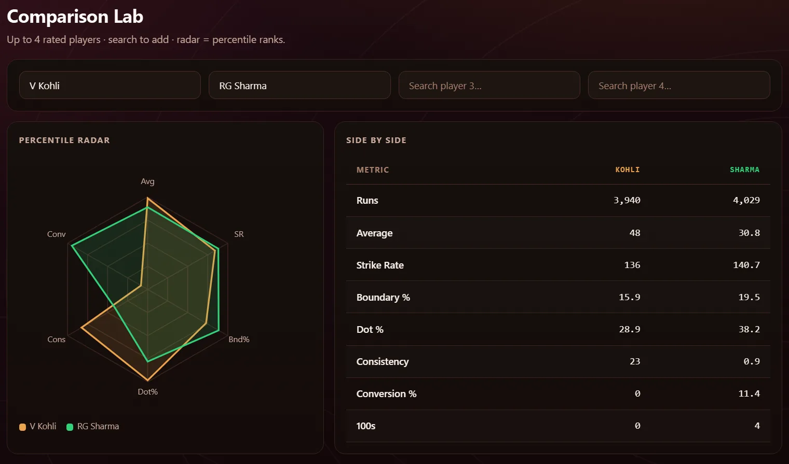
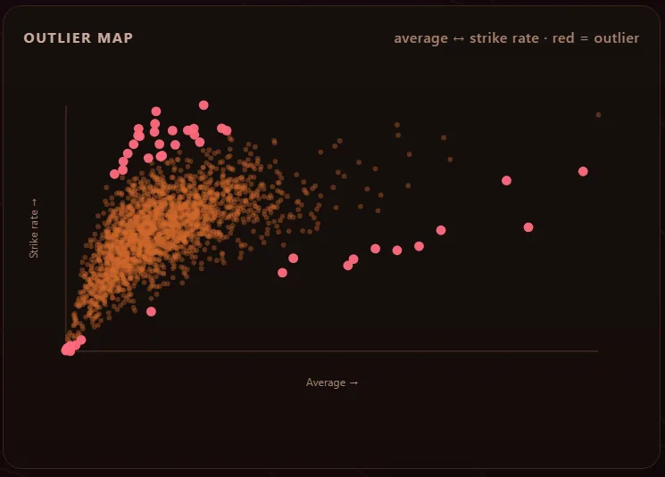
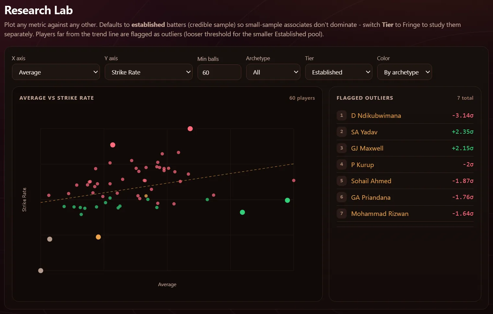

Search any player and see where they rank within their competition. Put up to four side by side, or plot one stat against another and look for the outliers.

Pick a competition first. Every page after that is about the players in it.

Average against strike rate for every rated batter. The red dots are the ones furthest from the pack.

Put any stat on either axis. Players far from the trend line are listed with how many standard deviations out they are.
Percentile ranks, powerplay, middle and death splits, opposition and venue breakdowns, and a career timeline.
Most runs, most wickets, best averages and strike rates, with era-adjusted versions beside the raw ones.
Pick a batter and see the eight closest to them across twelve percentile metrics.
How each venue scores, how often the chase wins, and team records by format.
Scores, fixtures and commentary from Cricbuzz. These need the Python server running.
Nothing is calculated in your browser. A build step reads Cricsheet's files, computes everything once, and writes one data file per competition. The dashboard only loads the file.
Every Cricsheet match goes into SQLite, one delivery at a time.
Percentiles, splits, similarity and era indices, once per competition.
Each data file of about 500 KB is verified before it replaces the old one.
The browser loads the file. No backend, no database.
Assigned from how a batter scores, within their own competition.
The dashboard is plain HTML plus pre-built data files, so a clone is enough for everything except live scores. A scheduled job rebuilds those data files from Cricsheet's latest release.
# history works offline $ git clone https://github.com/HalcyonVector/Cricket-Intelligence-Lab $ cd Cricket-Intelligence-Lab # then open web/dashboard/index.html in any browser # optional: live scores, and this page served at / $ pip install requests $ python serve.py
No login, nothing to install.